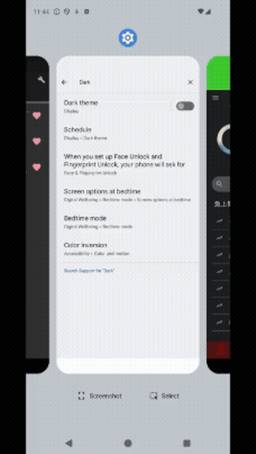

Yappli Tech Blog
https://tech.yappli.io/
株式会社ヤプリの開発メンバーによるブログです。最新の技術情報からチーム・働き方に関するテーマまで、日々の熱い想いを持って発信していきます。
フィード
Compose × Fragment で画面が真っ白に！？ Activity遷移で起きた謎の白画面を追う
Yappli Tech Blog
こんにちは、Androidエンジニアの伊藤と申します！ 今回は、Jetpack Composeと従来のFragmentを組み合わせた画面で、画面遷移後に戻ってきたときにコンテンツが表示されなくなる問題に遭遇しましたのでそれを共有しようかなと思います👀 不具合事象をざっくり説明すると、ComposeViewを持つFragment Aの中でAndroidFragmentを使用しており、そこから別のActivityを起動し、再びFragment Aに戻ってくると、画面が真っ白になってしまうという事象です。 本記事では、この問題の原因究明から解決までのプロセスと、最終的にsetViewComposit…
1日前

Android 16のダークテーマ対応、WebViewで意図しない挙動になってませんか？ 1
1
Yappli Tech Blog
こんにちは、Androidエンジニアの伊藤と申します！ 今回は、遅ればせながらAndroid 16対応でダークテーマの挙動を調整した際に、WebViewが意図せずダークモード固定になってしまった問題について共有します👀 android:isLightTheme 属性の理解が不十分だったために発生した問題で、同じような状況に遭遇する方もいるかもしれないため、経緯と解決策をまとめました。 背景：Android 16のダークテーマ拡張オプション 最初の対応：isLightTheme = false 問題の発覚：WebViewがダークモード固定に 原因：isLightTheme属性の誤解 解決策：We…
2日前
visionOS向け空間ビデオプレイヤーを実装してみた① ~空間ビデオのメタデータについて~
Yappli Tech Blog
1. はじめに みなさん、こんにちは！ 株式会社ヤプリでiOSエンジニアをしています白数 (@cychow_app) です。 最近はClaude CodeやCodexといったAI Agent周りのキャッチアップに日々追われていますが、それと並行してvisionOSについても日々追っています。 弊社ではApple Vision Proを3台保有しており、空間コンピューティングの可能性についても日々模索しています。 これまでの取り組みに関しては、下記の記事をご参照いただければと思います。 tech.yappli.io tech.yappli.io 私自身もApple Vision Proが日本で販…
3日前
JaSST '26 Tokyo 参戦！@東京ビッグサイト
Yappli Tech Blog
はじめに JaSSTとは JaSSTに向けて、「勉強会」での事前準備から「感想会」まで 勉強会での事前準備編 参加して「よかったね」だけで終わらせない JaSST 当日を迎えて 感じたこと 去年との比較 参加してみて ついにヤプリQAから登壇！ 最後に PR はじめに ヤプリQAの伊藤です！ 去年、一昨年と続き、JaSST ‘26 Tokyoに今年も参加してきました！ 去年のブログはこちら↓ tech.yappli.io 今回の開催場所は、なんと東京ビッグサイト！ JaSSTとしては2020年に同会場での開催を予定していましたが、コロナ禍により無念の断念…。 あれから6年、ついにビッグサイトで…
3日前
JaSST Tokyo 2026 登壇レポート | AIエージェント×GitHubで実現するQAナレッジの資産化と業務活用
Yappli Tech Blog
こんにちは、Yappli開発部 YappliQAグループの今西(@TKNW_Hitsuji)です。 2026年3月20日に開催された JaSST Tokyo 2026 で、 「AIエージェント×GitHubで実現するQAナレッジの資産化と業務活用」 というテーマで登壇してきました。本日はその内容と参加レポートをメインに記していきます。 登壇資料 はじめに なぜこのテーマで話そうと思ったのか 取り組んだこと 既存のQA資産を、AIが読める形に変換 既存観点をフィルタとして利用 GitHubで管理する意味 発表で伝えたかったこと JaSST Tokyo 2026に参加して感じたこと おわりに 登壇…
4日前

ヤプリ製アプリの「熱量」を可視化せよ！インターン生がdbtとデータモデリングで挑んだ社内ダッシュボード構築記
Yappli Tech Blog
はじめに ヤプリインターンに参加した経緯 ミッション プロジェクトの背景 取り組んだこと データパイプライン構築 ダッシュボード表示項目の検討 得られた学び 計算量を意識したSQL実装の重要性 dbtの3層構造による、変更に強いモデリングの習得 ダッシュボードの本質は意思決定を促すインサイトにある 今後の展望 AIと連携による「数値の背景」の可視化 #to-data への頻出依頼を「先回り」で可視化 おわりに はじめに はじめまして！会津大学コンピュータ理工学部4年の寺田優彦と申します。 2026年1月16日から2月27日までの期間、株式会社ヤプリのデータサイエンス室にインターンとして参加させ…
1ヶ月前
iOSエンジニア志望の2ヶ月間のインターンレポート
Yappli Tech Blog
はじめまして！ ヤプリのiOSチームでインターンに参加させていただきました、三ツ井と申します。 本選考の一環としての参加ではありましたが、技術的にもカルチャー的にも沢山の学びがあったので、振り返りとしてまとめたいと思います。 インターンに参加したきっかけ やったこと 具体的に取り組んだタスク 1. フォーム機能のUI不具合修正 2. ポイントカード機能のデザイン調整 3. スクロールメニュー内のログイン画面表示の仕様変更 参加してみての感想 1. 「自分のコードがプロダクトになる」という緊張感 2. ドキュメント文化の凄さ 3. 常に成長する文化 4. 人の良さ＋プロダクト愛 最後に インター…
2ヶ月前
iOSチームにジョインして1ヶ月の振り返り
Yappli Tech Blog
はじめに 経歴 入社を決めた理由 入社してみて オンボーディング チーム 入社1ヶ月でやったこと YOP チケット対応 リリース・ビルド対応 これから おわりに はじめに 12月よりiOSエンジニアとしてジョインした池田です。 今回は中途入社して1ヶ月で感じたヤプリについてお伝えします！ 経歴 新卒でIT企業へ入社しバックエンド開発（エンジン、SDK等）に従事しました。またモバイルアプリ開発もヘルプとして複数回経験しました。一度外の世界を見てみたいと思い転職し、2社目ではiOSエンジニアとしてtoCのアプリ開発と後輩育成に勤しみました。そして社会人7年目、3社目となる株式会社ヤプリへ入社しまし…
3ヶ月前
Android アプリに Okta 認証を入れてみた
Yappli Tech Blog
こんにちは、最近 iOS から Android エンジニアにジョブチェンジした西村です。 最近社内の Android アプリに Okta 認証を導入し、ログインをしないと使えないようにセキュリティを強化しました。 あまり実装する機会はないかもしれないですが、どのように実装したか紹介していきます！ この記事は 「ヤプリ&フラー 合同アドベントカレンダー #2」 の21日目の記事です！🎄 Oktaとは？ 今回やりたいこと 実装の前に 実装 1. Okta SDK の導入 2. SDK の初期化 3. ログイン画面 4. ログイン処理 5. 状態を Model で管理 6. ログアウト処理の実装 最…
3ヶ月前
第2回 ヤプリ×フラー合同LT大会参加レポート！
Yappli Tech Blog
こんにちは、サーバーサイドエンジニアの籔本です！ ヤプリの開発統括本部では四半期に一度LT大会を実施しています。 今回は、ヤプリと資本業務提携しているフラー株式会社（以下、「フラーさん」）をお招きし、2回目となる合同LT大会を開催しました！ どんな会？ 発表内容 Pick Up 『犬との挨拶マナー研修』 『ホームポジションで快適にタイピングするTips』 『古のソフトウェア開発』 『ラーメンをGeminiに食わせたら私が15kg痩せた話』 まとめ どんな会？ LT大会（Lightning Talk大会）は、 一人約5分で自由なテーマに基づいて発表していくイベントです。ヤプリの開発統括本部では、…
3ヶ月前
QAカンファレンス「JaSST」 〜プロポーザル採択までの道〜
Yappli Tech Blog
この記事は 「ヤプリ&フラー 合同アドベントカレンダー #1」 の24日目の記事です！🎄 こんにちは。ヤプリでQAエンジニアをしているぐっさんです。 今年、ヤプリQAとしては勉強会の開催、テックブログの積極的な更新やQA外部イベントへの参加などチーム内外問わず様々な場面でのQA技術発信を目標に活動をしてきました。 その一つとして、毎年行われていますQAエンジニアを対象とした技術カンファレンス「JaSST’26 Tokyo」に、ヤプリQAとして初めてプロポーザル投稿へと挑戦しました。 結果無事1名のプロポーザルが採択されましたので、本記事では、チーム一丸となって実施したプロポーザル採択に至るまで…
3ヶ月前
SwiftのAutomatic Grammar Agreementについて
Yappli Tech Blog
こんにちは、岸川克己です。 SwiftのAutomatic Grammar Agreementとは、英語における複数形や三単現のsのように、翻訳テキストの一部に語形の変化がありうるという情報を埋め込み、実行時にOSが 数などに合わせて指定した語句を文法的に正しい文章に自動的に修正してくれる仕組みです。 例を見てみましょう。 Text("Add ^[\(count) ticket](inflect: true) to your order.") この例ではcount変数に入る数によって後続のticketの語形が単数形か複数形のどちらかに自動的に変化します。 Add 0 tickets to yo…
3ヶ月前
ヤプリ社員20人の「今年買ってよかったもの」をAIに分析させたら、"ノーコード的思考"が浮かび上がった
Yappli Tech Blog
社内Slackで集めた「今年買ってよかったもの」50アイテム以上をAIで傾向分析。食洗機、BAKUNE、Steamゲームなど多種多様なアイテムから見えてきたのは「仕組みで解決して本質に集中する」というノーコード的思考でした。
3ヶ月前
LangGraphでアプリ分析AIエージェントを作ってみた
Yappli Tech Blog
こんにちは、ヤプリの25新卒サーバーサイドエンジニアの籔本です！ 先日、ヤプリの開発統括本部内でAIハッカソンが開催されました。 私を含む 24・25新卒入社のエンジニア4人でチームを組み、「アプリ分析AIエージェント」 を開発しました。 今回の記事ではその開発した内容と成果を紹介します！ 概要 作ったのもの LangGraphとは 実装したエージェント Orchestrator DL / MAU Push Screen 実験 DL / MAUの分析結果 プッシュ通知の分析結果 ホットスクリーンの分析結果 総合的な分析結果 まとめと展望 余談 概要 作ったのもの 今回の開発の目的は「アプリのエ…
3ヶ月前
TRPGのAI守密人をRAG + MCPで作った話
Yappli Tech Blog
こんにちは！Androidエンジニアのてつです。 皆さんはTRPGをご存知でしょうか？プレイヤーが架空のキャラクターを演じ、ゲームマスター（GM）の語る物語の中で冒険を繰り広げる、想像力を駆使した遊びです。 今回は、趣味で楽しんでいるCall of Cthulhu（CoC）というTRPGを題材に、RAGとMCPを活用したAI-GMシステムを構築した経験をご紹介します。 なぜAI-GMが必要だったのか AI-GMの可能性と課題 RAGとMCPでの解決案 MCPの概要と選定 FastMCPフレームワークを選んだ理由 実際のツール定義例 RAGの技術選定 RAGを使う背景 ChromaDBを選んだ理…
3ヶ月前
【n8n × Gemini】非エンジニアがAIを使って社内問い合わせ対応を効率化しようとした話
Yappli Tech Blog
こんにちは！アプリ申請チームのあきなです。この記事は Yappli Advent Calendar 2025 の記事です！ ヤプリ&フラー 合同アドベントカレンダー #2 Advent Calendar 2025 - Adventar 普段、私はアプリ申請チームの一員として業務を行っていますが、今回はAIと自動化ツールを駆使して業務効率化に取り組んでみたお話です。非エンジニアのチャレンジとして、温かい目で見守っていただければ幸いです。 チャレンジの背景 私の所属するチームでは、社内からの質問をSlackのワークフロー（WF）を利用して受け付けています。 質問の数はだいたい1日3件〜5件ほど。回…
3ヶ月前
Yappli Analyticsのベンチマーク機能改善プロジェクトの裏側
Yappli Tech Blog
この記事は ヤプリ&フラー 合同アドベントカレンダー Advent Calendar 2025（3枚目） の18日目の記事です。 こんにちは！データサイエンス室（以下、DS室）の山本です（@__Y4M4MOTO__）です。 弊社では「Yappli Analytics」というアプリ運用のためのデータ分析ダッシュボードを提供しています。ダッシュボードでは、アクティブユーザーや新規ユーザー数の推移、プッシュ通知の開封率など様々なデータを確認できます。その中でも特徴的なものが「ベンチマーク機能」です。 「ベンチマーク機能」では、900以上（2025/12/17時点）のYappli製アプリの中で、自アプ…
3ヶ月前
Vitest v3でVueファイルにブレークポイントを設定するとズレる
Yappli Tech Blog
この記事はヤプリ&フラー 合同アドベントカレンダー Advent Calendar 2025の16日目の記事です。 TL;DR 本題 Vitest v4を使う Chrome DevToolsを使ってデバッグする Vite(Vitest)プラグインでstyleを消す おわりに TL;DR Vitest v4にする v3以前は2通りで対応できる vitest --inspect --no-file-parallelism でテストを実行した上でchrome://inspectからChrome DevToolsでブレークポイントを設定するとズレない。 あるいは<style>を消す。 本題 デバッグは…
3ヶ月前
Atlassian Rovoエージェントを使ってJiraの課題編集を自動化する
Yappli Tech Blog
はじめに 背景 方法 Rovoエージェントの用意まで ラベル自動付与プロンプト 問い合わせ分類自動付与プロンプト 影響している機能自動付与プロンプト Jiraプロジェクトの自動化でRovoエージェントを呼び出す 結果 最後に はじめに こんにちは、サーバーサイドエンジニアの中川（@tkdev0728）です。 今の私は機能開発の他に社内からの問い合わせ対応プロジェクトのリードエンジニアも行なっています。 今回は問い合わせ対応について回答者が回答以外に手作業で対応している部分を一部AIを活用して自動化したので何をやったのか、どうやってやったのかを紹介します。 背景 問い合わせ対応の業務内容としては…
3ヶ月前
お手軽！Claude CodeのスラッシュコマンドでPull Request作成をほぼ全自動化してみた
Yappli Tech Blog
この記事は、 株式会社ヤプリ アドベントカレンダー2025 2枚目 12/15 の記事です。 adventar.org ヤプリではClaude CodeをVertexAI経由で利用できるようになっていて、希望するエンジニアは全員使えます！ そこで最近、Claude Code で使えるスラッシュコマンド機能を触っていて、「Pull Request の作成って、もう全部任せられるんじゃないか？」と思ったので、 /pr というコマンドを作り、PR 作成をほぼ自動化してみました。 最終的には、ブランチのチェックから、コミットと push、そして Pull Request 本文の作成（テンプレートの埋め…
3ヶ月前
dbtプロジェクトのmodelsのディレクトリ構造を再構築してみた
Yappli Tech Blog
この記事は dbt Advent Calendar 2025 の12日目の記事です。 ※ ヤプリ&フラー 合同アドベントカレンダー Advent Calendar 2025（1枚目） の12日目にもクロスエントリーしています。 こんにちは！データサイエンス室（以下、DS室）の山本です（@__Y4M4MOTO__）です。 先日、dbtプロジェクトの models/ ディレクトリ構造を見直し、再構築を実施しました。この記事では、 なぜ再構築するに至ったか という課題と、 再構築前後のディレクトリ構造の違い について紹介します。 models/ ディレクトリの構造に悩んでいる方や、dbtプロジェクト…
4ヶ月前
AIが提案する「モダンなeslint設定」の検証とチームへ導入した話
Yappli Tech Blog
これはヤプリ&フラー 合同アドベントカレンダー Advent Calendar 2025の8日目の記事です。 こんにちは。ヤプリフロントエンドグループの武井です。 みなさんeslintの設定どうしていますか。 YappliのCMS管理画面ではフロントエンドにVueとNuxtを採用しています。 そのコードのチェックにeslintを使用しています。 この記事を読んでいる人には説明はいらないかもしれませんが、lintとはコード品質を保つための静的解析ツールで、構文やスタイルの問題を検出・修正します。eslintはTypeScriptにも対応した代表的なツールになります。 とても便利なツールなのですが…
4ヶ月前
コーポレートIT部門のAI奮闘記 2025 🤖
Yappli Tech Blog
この記事は、株式会社ヤプリ＆フラー 合同アドベントカレンダー2025 1枚目 12/6 の記事として投稿されます。🌲🎅 adventar.org こんにちは！株式会社ヤプリ コーポレートITの辻村です🐈⬛ 10月末にこたつを出してから、11月はまだそこまで寒くないのに仕事中もずっとこたつにいました。腰が。。。orz 今年になってから社内でAIツールを新規導入・活用する機会がすごく増えています。 ヤプリは、比較的ブレーキをかけずにAI活用を推進している会社だと思っています。そんな中で、守りの役割である私たちコーポレートITが今年一年どう動いてきたか？をつらつら書きたいと思います💪 1. 攻めの…
4ヶ月前
WebViewでYouTubeが再生できない（153エラー）時の対処法
Yappli Tech Blog
iOSチームの加藤です。 今回は、WKWebViewを利用してYouTubeの再生機能を実装する際につまずいた箇所がありましたので共有したいと思います。 概要 iOSアプリ内でYouTubeを再生する場合、WKWebView上でIFrame Player APIを利用するのが一般的です。 基本的な実装方法は公式のサンプルに記載されており、下記のようにWKWebViewの loadHTMLString を利用してHTMLを読み込むことで再生が可能でした。 しかし、以前はこの実装で問題なく再生できていたのですが、ある時から添付画像のような エラーコード：153 が表示され、再生できない事象が発生し…
4ヶ月前
「分析」から「基盤」へ。データに対する視点が180度変わったヤプリでのインターン体験記
Yappli Tech Blog
この記事はヤプリ&フラー 合同アドベントカレンダー Advent Calendar 2025（2枚目） の4日目の記事です。 自己紹介 ヤプリのインターンに惹かれた理由 インターンタスク：データ基盤の改善 YA(Yappli Analytics)とCMSレポート 現状の課題とインターンで取り組んだこと タスクに取り組むにあたって学んだ前提知識 システム設計 各実装での苦労した点と乗り越えたこと component層でやるべきロジックへの切り出し 出力層にある CMSの「QRコード・短縮URL読み取り数」をどのように論理ロジックでまとまりを作るか どこまでのロジックのまとまりをcomponent…
4ヶ月前
PlaywrightのE2Eテスト実行はなぜ速いのか? -Seleniumとの比較-
Yappli Tech Blog
こちらは ヤプリ&フラー 合同アドベントカレンダー 2025 4日目の記事になります。 はじめに ヤプリでQAエンジニアをしている今西です。 QAチームでは、 Yappli (CMS)の一部を対象にPython＋Seleniumを使ったE2Eテストの自動化を行なっています。 そこで課題となっているのが実行速度です。 現状、E2Eテストコードの新規追加や修正確認などをローカルで動作確認する際、目視での確認が必要になります。 しかし、ブラウザ上の要素操作と操作のインターバルが長いため、実行完了までに時間がかかります。 そんな中、「 Playwright なら Selenium よりE2Eテストの実…
4ヶ月前
【初参加レポ】これが「カンファレンス」か！pmconf 2025@大阪で得た4つの大きな気づき
Yappli Tech Blog
2025/12/05 追記 pmconf 2025＠東京での増渕の登壇資料などを追加したリライト版の記事が出ましたので、こちらもぜひお読みください！ note.com こんにちは！ヤプリのプロダクトマネージャー、大村です。 今回は弊社の小野田（@onyoda3）が登壇するということで大阪で開催されたpmconf 2025に参加してきました！ 今年ヤプリはpmconf 2025のシルバースポンサーもしております。 note.com 実は私、元々カンファレンスにあまり馴染みがなく「セミナーとカンファレンスって一緒じゃないの？」というレベルでした。正直、「1日集中して聞けるかな…」なんて心配もしてま…
4ヶ月前
DATA SUMMIT 2025に「プロダクトデザイナーに学ぶ、『見る気が起きる』ダッシュボードの作り方」という題で登壇しました！
Yappli Tech Blog
この記事はTROCCO&COMETA Advent Calendar 2025の1日目の記事です。 ※ ヤプリ&フラー 合同アドベントカレンダー Advent Calendar 2025（2枚目） の1日目にもクロスエントリーしています。 こんにちは！データサイエンス室（以下、DS室）の山本です（@__Y4M4MOTO__）です。 先日11/26(水)に開催された「DATA SUMMIT 2025」のTheater Sessionにて、「プロダクトデザイナーに学ぶ、『見る気が起きる』ダッシュボードの作り方」という題で登壇させていただきました！ primenumber.com この記事では、登壇…
4ヶ月前
ヤプリのFEでインターンをさせていただいた話
Yappli Tech Blog
こんにちは！11月から1ヶ月間FEエンジニアとして就業型インターンに参加させていただいた大学院1年の野口と申します！ 1ヶ月という短い期間だったのですが、ヤプリでのインターンで取り組んだこと・感じたことを共有しようと思います😊 インターンに参加した理由 入社して感じたこと インターンで取り組んだこと 技術的課題と解決 旧画面用コードの削除 ページングバグの解消 開発プロセスから得た学び 最後に インターンに参加した理由 私がヤプリの就業型インターンに参加させていただいた理由は、「プロダクトの価値を最大化できるエンジニア」という自身の目指すキャリア像に、ヤプリの環境が深く関わっていると感じたから…
4ヶ月前
Vue Fes Japan 2025 と After Talk に参加しました：登壇の学びと振り返り
Yappli Tech Blog
フロントエンドエンジニアの青瀬ユウ (@aose_developer) です ヤプリは Vue Fes Japan 2025 にプラチナスポンサーとして参加しました vuefes.jp 今年は自分がプラチナスポンサーセッション枠で登壇させていただきました また、11/11 には After Talk も開催されたため、少し時間が経ちましたが、改めて Vue Fes Japan 2025 を振り返って、個人的な学びをまとめます セッション資料 (@aose_developer) After Talk 資料 (@k0n_karin) 登壇準備 Vue Fes の様子 登壇の学び：緊張との戦い 当日…
4ヶ月前